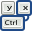

GNOME Commander
A powerful file manager for the GNOME desktop environment
 Development
Development

This page contains information about hacking and contributing to the GNOME Commander project. We encourage anyone to contribute with code, translations, bugreporting, new useful ideas, or just give some quality feedback that also is quite important.
If you would like to get involved and don't know where to start, have a look especially into the TODO file. You are also welcome to sign up on our mailing lists and take part in discussions and development.
Current plans
The team behind GCMD is currently working on switching from obsolete libraries, e.g. from gnome-vfs to gvfs/GIO. This is a major task and, thus, will take some time.
Future plans
In the future, the team behind GCMD are will further enhance python plugin support. Plugins should be dropped in the ~/.gnome-commander/plugins directory. The work on supporting meta-data also continues. The plan is to add this functionality to the searchtool, custom columns and the internal viewer. The TODO file gives a hint on what we are working on, or like to work on, and maybe appreciate some community efforts on. Users and developers are as usual welcome to contact us, ask questions and discuss the development on our mailinglists. If you are keen on fixing open bugs, have a look at the GCMD bugzilla page.
 Git Repository
Git Repository
The official Git repository of GNOME Commander is registered on git.gnome.org, with a fork at GitHub.com. For more information about Git and Gnome visit live.gnome.org/Git.
Branches and Versions
GNOME Commander is being developed in several branches:
- The master branch, where all the normal development takes place. It should always contain a runable version of GCMD.
- One or more stable branches, named after the current stable release (e.g. gcmd-1-4), which only includes bugfixes, doc updates, translation updates, but no new features;
- Optionally, some feature branches, where new ideas or big features are cooked until they are ready to be merged in the master branch.
The version numbers (major, minor and micro) follow the standard of odd and even
versioning. Even numbers are stable versions, that are intended for all-day use.
Odd versions are development versions. The version number is stored as git-tags in the
git repository. To see all of them, just type git tag. The current one is
also stored in the first line of configure.ac.
To check out the GCMD repository to your local hard disc, enter the following commands:
The instable master branch:
git clone git://git.gnome.org/gnome-commander
The current stable branch:
git clone -b gcmd-1-4 git://git.gnome.org/gnome-commander
If you already cloned the repository, run git
pull inside the gnome-commander directory to get the
latest code revision. To switch between the branches, run git checkout
$BRANCH.
Tips for working with Git
- Why not automating
makeandmake checkbefore every commit? Nothing easier than that: Just type the following command when you are in the top directory of the GCMD repository:
ln -s ../../pre-commit.sh .git/hooks/pre-commitNow, all your commits are automatically tested before they are actually committed viagit commit. When you only have a small commit to be made, where no check is necessary, you can avoid it with the commandgit commit --no-verify.
 Building from source
Building from source
In general, the usual ./configure && make; sudo -i make install procedure should work like a charm. If you are building
the code checked out from Git, use ./autogen.sh instead of ./configure. Don't forget to install the dependencies
which are reported in the configure step.
The current instable master branch is for testing purposes only! Do not handle important data with it.
If you don't have Git installed, you may also download a snapshot package as a tar.bz2 file from here.
Building in Dockerfile
There exists a Dockerfile for compiling
GCMD in an Ubuntu environment. Start building it with the command
sudo docker build . inside the top directory of the GCMD repository.
 Contributing by Developing
If you want to contribute, send in patches, having some useful idea or just some feedback then you are welcome to contact us. You can also make a pull request on GitHub against the GCMD repository.
If you have some good ideas for stuff that you want to see in this program, check the TODO file first before sending a message to the mailing lists.
If you want to submit a patch via email:
- Send an email with the patch to the developers or the developer list.
- Please use the following command to generate the patch:
diff -Naur old_file new_file - Include it as text together with a good explanation of what the patch does or what problem/bug it solves.
- You can also do all of that directly via git using
git format-patchandgit send-email.
Contributing by Translating
The current status of all project translations can be found at https://l10n.gnome.org/module/gnome-commander/. For adding a new translation simply download the initial potfile of the master branch and start translating by renaming the file to LL.po (replace "LL" with your language code, see the complete list of language codes). Or take an already existing po file from the list on the page given above.
Here you will find the recipe on how to contribute with your new or updated translation:
- Get a fresh copy of the program source (either from Git or snapshot)
- Unpack it and run
./autogen.sh. - Update proper LL.po file: go into the
podirectory and runintltool-update LL.
You may find translation compedia to be quite handy as a reference. You can download some po files
from other projects and create
such a compedium by: msgcat -o compendium-LL.po *.po.
There are several translation tools available. Some of them are: Poedit (http://www.poedit.net/) and gtranslator (http://gtranslator.sourceforge.net/). KBabel could also be a good tool...
All translation files (LL.po) must be UTF-8. To avoid corruption by mail application please send them as gzipped or bzipped attachments. Better create a merge request via GitHub. Alternatively have look at http://l10n.gnome.org/ if you want to start translating for more projects than just GCMD.
 Hacking documents
Hacking documents
- Internal-Viewer Internals. This document describes details of the 'intviewer' library, which implements GNOME Commander's Internal-Viewer. If you plan to hack the internal viewer, add features or just browse the source for fun, we recommend reading this document first (However, note that the source files in Git always are more updated than this document).